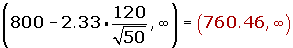
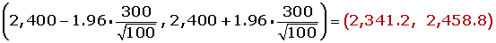
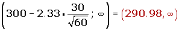
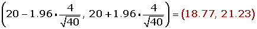

Hypothesis Testing Problems
1A company that packages peanuts states that at a maximum 6% of the peanut shells contain no nuts. At random, 300 peanuts were selected and 21 of them were empty.
1.With a significance level of 1%, can the statement made by the company be accepted?
2.With the same sample percentage of empty nuts and 1 − α = 0.95, what sample size would be needed to estimate the proportion of nuts with an error of less than 1%?
2The life span of 100 W light bulbs manufactured by a particular company follows a normal distribution with a standard deviation of 120 hours and its half-life is guaranteed under warranty for a minimum of 800 hours. At random, a sample of 50 bulbs from a lot is selected and it is revealed that the half-life is 750 hours. With a significance level of 0.01, should the lot be rejected by not honoring the warranty?
3A manufacturer of electric lamps is testing a new production method that will be considered acceptable if the lamps produced by this method result in a normal population with an average life of 2,400 hours and a standard deviation equal to 300. A sample of 100 lamps produced by this method has an average life of 2,320 hours. Can the hypothesis of validity for the new manufacturing process be accepted with a risk equal to or less than 5%?
4The quality control division of a factory that manufactures batteries suspects defects in the production of a model of mobile phone battery which results in a lower life for the product. Until now, the time duration in phone conversation for the battery followed a normal distribution with a mean of 300 minutes and a standard deviation of 30. However, in an inspection of the last batch produced before sending it to market, it was found that the average time spent in conversation was 290 minutes in a sample of 60 batteries. Assuming that the time is still normal with the same standard deviation:
Can it be concluded that the quality control suspicions are true at a significance level of 1%?
5It is believed that the average level of prothrombin in a normal population is 20 mg/100 ml of blood plasma with a standard deviation of 4 miligramos/100 ml. To verify this, a sample is taken from 40 individuals in whom the average is 18.5 mg/100 ml. Can the hypothesis be accepted with a significance level of 5%?
Statistical Inference Solutions
1
1A company that packages peanuts states that at a maximum 6% of the peanut shells contain no nuts. At random, 300 peanuts were selected and 21 of them were empty.
1.With a significance level of 1%, can the statement made by the company be accepted?
1. State the null and alternative hypotheses:
H0 : p ≤ 0.06
H1 : p > 0.06
2. Calculate the limit of acceptance:
α = 0.01 zα = 2.33.
Calculate the confidence interval for the proportion:
3. Verify:
4. Decide:
The nule hypothesis, H0, should be accepted with a significance level of 1%.
2.With the same sample percentage of empty nuts and 1 − α = 0.95, what sample size would be needed to estimate the proportion of nuts with an error of less than 1%?
1 − α = 0, 9 5 zα/2 = 1.96
2
The life span of 100 W light bulbs manufactured by a particular company follows a normal distribution with a standard deviation of 120 hours and its half-life is guaranteed under warranty for a minimum of 800 hours. At random, a sample of 50 bulbs from a lot is selected and it is revealed that the half-life is 750 hours. With a significance level of 0.01, should the lot be rejected by not honoring the warranty?
1. State the null and alternative hypotheses:
H0 : µ ≥ 800
H1 : µ < 800
2. Calculate the limit of acceptance:
α = 0.01; zα = 2.33
Calculate the confidence interval:

3. Verify:
x = 750
4. Decide:
The nule hypothesis, H0, cannot be accepted with a significance level of 1%.
3
A manufacturer of electric lamps is testing a new production method that will be considered acceptable if the lamps produced by this method result in a normal population with an average life of 2,400 hours and a standard deviation equal to 300. A sample of 100 lamps produced by this method has an average life of 2,320 hours. Can the hypothesis of validity for the new manufacturing process be accepted with a risk equal to or less than 5%?
1. State the null and alternative hypotheses:
H0 : μ = 2,400
H1 : μ ≠2,400
2. Calculate the limit of acceptance:
α = 0.05 zα/2 = 1.96.
Calculate the confidence interval for the mean:

3. Verify:
Value obtained from the sample mean: 2,320.
4. Decide:
The nule hypothesis, H0, cannot be accepted with a significance level of 5%.
4
The quality control division of a factory that manufactures batteries suspects defects in the production of a model of mobile phone battery which results in a lower life for the product. Until now, the time duration in phone conversation for the battery followed a normal distribution with a mean of 300 minutes and a standard deviation of 30. However, in an inspection of the last batch produced before sending it to market, it was found that the average time spent in conversation was 290 minutes in a sample of 60 batteries. Assuming that the time is still normal with the same standard deviation:
Can it be concluded that the quality control suspicions are true at a significance level of 1%?
1. State the null and alternative hypotheses:
H0 : µ ≥ 300
H1 : µ < 300
2. Calculate the limit of acceptance:
α = 0.01; zα = 2.33.
Calculate the confidence interval for the mean:

3. Verify:
µ = 290
4. Decide:
The nule hypothesis, H0, cannot be accepted with a significance level of 1%.
5
It is believed that the average level of prothrombin in a normal population is 20 mg/100 ml of blood plasma with a standard deviation of 4 miligramos/100 ml. To verify this, a sample is taken from 40 individuals in whom the average is 18.5 mg/100 ml. Can the hypothesis be accepted with a significance level of 5%?
1. State the null and alternative hypotheses:
H0 : μ = 20 mg/100 ml
H1 : μ ≠ 20 mg/100 ml
2. Calculate the limit of acceptance:
For a significance level of α = 0.05, the corresponding critical value is: zα/2 = 1.96.
Calculate the confidence interval for the mean:

3. Verify:
The value of the mean of the sample is: 18.5.
4. Decide:
The nule hypothesis, H0, cannot be accepted with a significance level of 5%.